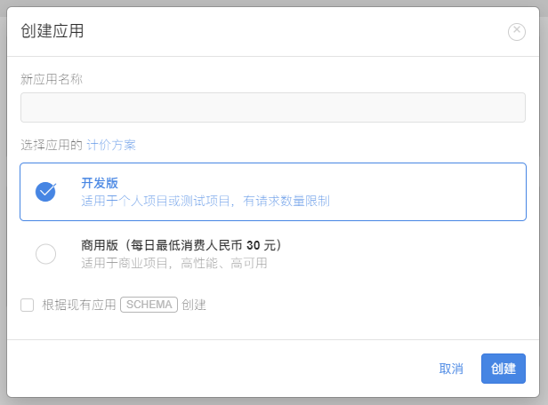
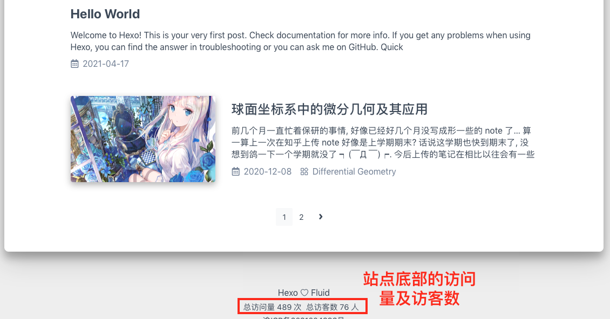
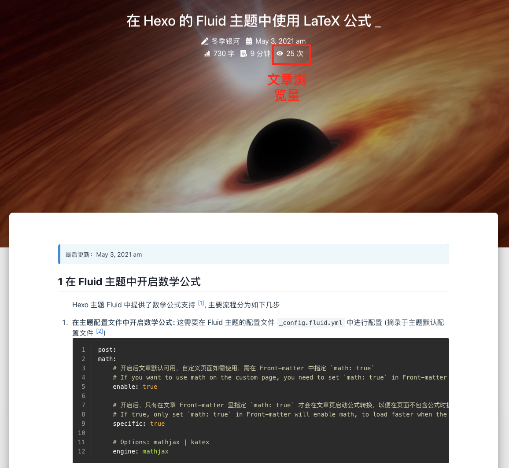

通过 Fluid 主题为 Hexo 博客添加评论功能及站点统计
最后更新：2021.05.04, 13:11
1 在主题配置文件中开启评论
首先在主题的 post 选项下开启主题并选择想启用的评论插件 [1] . 在 _config.fluid.yml 下设置
1 | |
由于本博客搭建时采用的是 Valine [2], 这里也以 Valine 为例. 在 type 中支持的类型请查看官方参考文档 [1] . 这里笔者个人比较青睐于 Valine, 主要原因如下:
- 轻量级, 简洁
- 其是基于 LeanCloud [3] 的, 而配置站点访问统计时同样可以使用 LeanCloud
- 后续有一个名为
Waline[4] 的评论系统. 其实基于Valine的, 但增加了后端. 如果想要评论系统具备后端, 从Valine到Waline的转换会比较顺畅,Waline的官方文档也提供了迁移指南 .
2 通过 Valine 开启评论功能
在进行了上一节的基本设置以后, 下面介绍如何 (借助 Fluid) 开始使用 Valine [5] .
第一步: 注册 LeanCloud 帐号
首先要注册一个 LeanCloud [3] 帐号, 进入进入控制台后点击左下角创建应用 (应用名按自己喜好起即可, 笔者直接起的是 Valine)

之后进入刚刚创建的应用, 选择左下角的 设置 -> 应用Key, 即可看到 ID 及Key

第二步: 将新应用信息写入 Fluid 的配置文件
首先在 _config.fluid.yml (理论上原始配置源于 hexo-theme-fluid/_config.yml. 关于评论插件的配置方式详见下一节) 中搜索 valine:, 按照上一步获得的信息填写好 appid, appkey, serverURLs 即可.
第三部: 重启并生成评论界面
重启 Hexo 后即可.
1 | |
3 配置插件选项
插件选项同样在 _config.fluid.yml 中进行配置, 不同插件的可选项详见 Fluid 官方参考文档的相关连接 [1]. 值得注意的是, 评论插件的可选项是 一级选项, 亦即是与 post 等同级的选项. 另外, 在官方配置文件靠末尾的地方, 已经给出了相应插件的基本配置信息, 因此 不必自己新建立插件选项. 如在原始的 config.fluid.yml (亦即 hexo-theme-fluid/_config.yml) 中搜索 valine:, 将会找到
1 | |
插件 Valine 支持的选项可参考: Valine: 配置项.
4 开启站点统计
作为站主, 当然会想知道自己的网站的访问情况. 站点统计分为两类, 一类是网站的总访问量与访客数, 另一类是单篇文章的浏览量, 下面分别介绍.
开启 PV 与 UV 统计
Fluid 目前支持两种方式进行 PV 与 UV 统计 LeanCloud 与不蒜子. 由于前面在使用 Valine 时已经注册过LeanCloud 了. 为了方便, 笔者在 PV 与 UV 统计上同样是通过 LeanCloud 的方式. 第一步要在 _config.fluid.yml 中开启统计并设置使用的工具
1 | |
第二步设置统计的显示形式
1 | |
最终将在网页底部显示访问信息

文章浏览量
经过之前对 web_analytics 的配置后, 文章阅读数的功能可直接在 _config.fluid.yma 的 post 中开启 [6]
1 | |
效果如下

Reference
本博客所有文章除特别声明外，均采用 CC BY-NC-SA 4.0 协议 ，转载请注明出处！